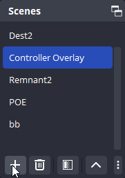
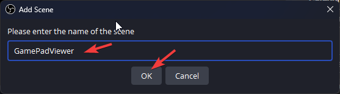
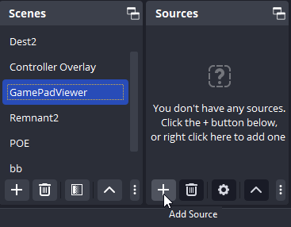
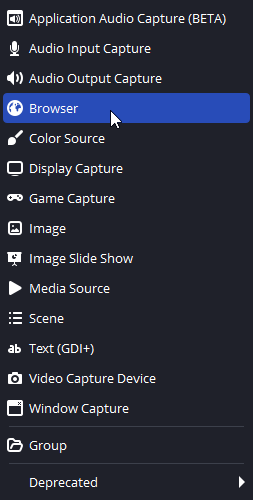
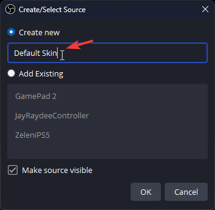
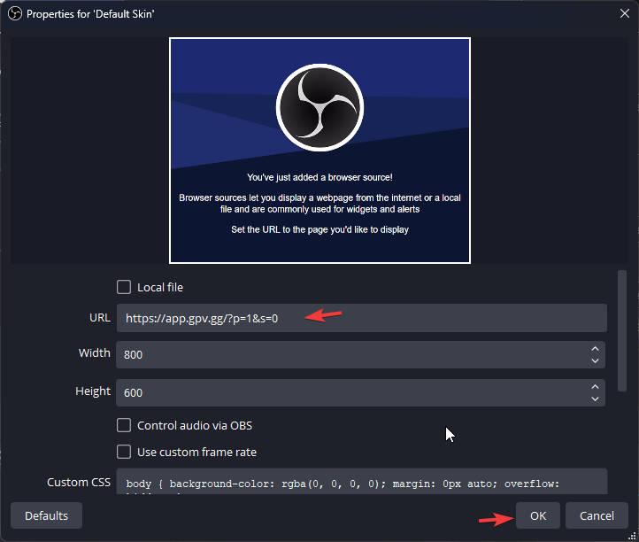
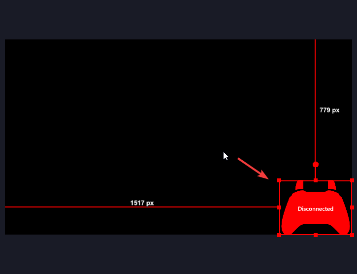
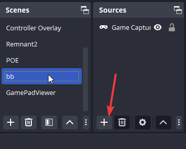
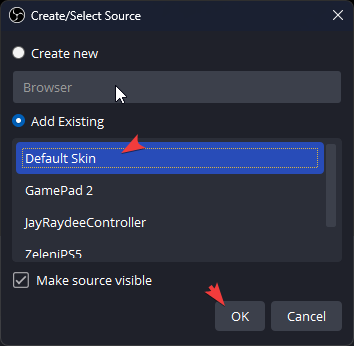
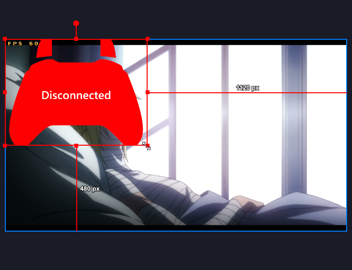

Guide for adding GPV skin to OBS
Step 1 - Add Scene

Step 2 - Name scene

Step 3 - Add Source

Step 4 - Select Browser Source

Step 4 - Name Source/Skin

Step 5 - Add skin URL

Step 6 - Test and Reposition

Step 7 - Add skin to Game Scene

Step 8 - Select Existing skin/source

Step 9 - Position/Resize Game Skin Source
